Carnes Nobres

Picanha
O maior clássico do churrasco com uma capa de gordura dourada que derrete na boca. Garante maciez extrema e aquele sabor marcante que todo mundo ama.
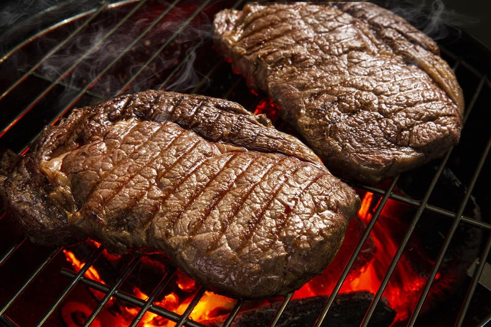
Bife Ancho
Corte argentino, a perfeição para os verdadeiros amantes de carne premium e nobre. Entrega um sabor amanteigado irresistível e suculência logo na primeira mordida.
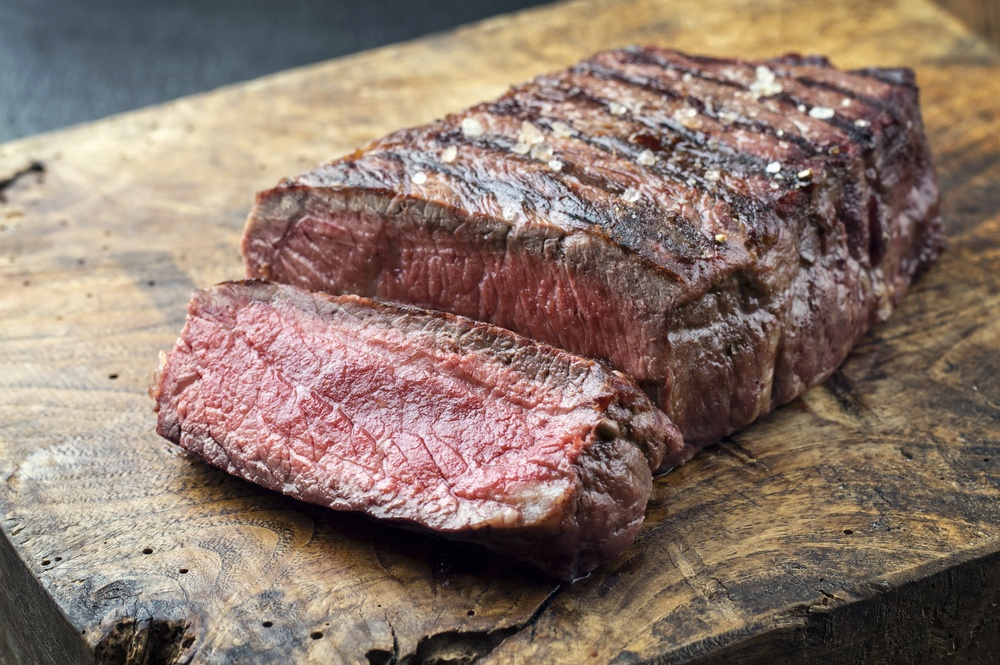
Filet Mignon
O sinônimo máximo de sofisticação, leveza e corte extremamente limpo. A pedida ideal se o que você quer é uma carne que derrete na boca.
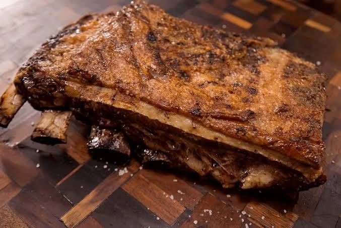
Costela
O verdadeiro sabor da tradição assado lentamente por longas horas. Chega à mesa soltando do osso, com gordura no ponto e toque defumado.
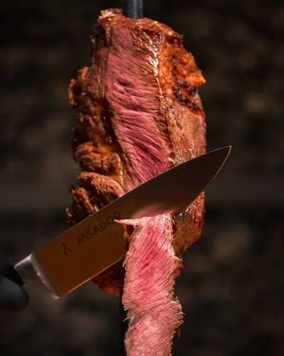
Costela Premium
evolução da costela tradicional, usando a parte mais carnuda da janela. Perfeita para quem quer intensidade de sabor e marmoreio espetacular.
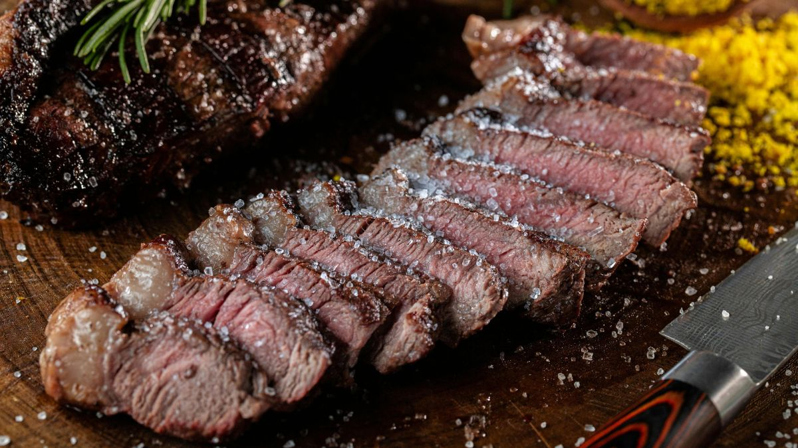
Fraldinha
Se você procura uma carne no ponto certo e saborosa, a fraldinha é a escolha certa. Com suas fibras soltas, garante uma mordida leve e muito suculenta.
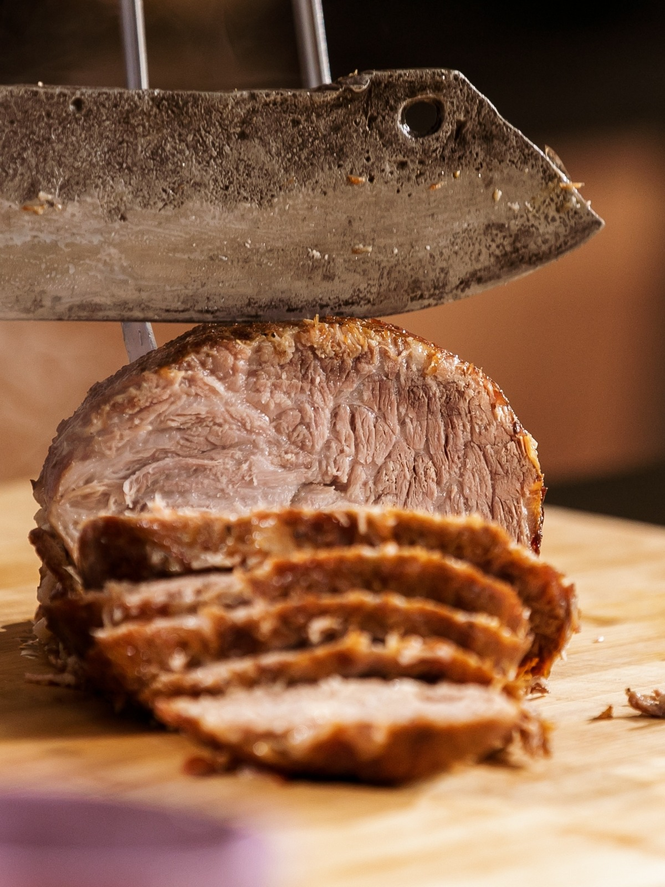
Cupim
A escolha perfeita para quem busca uma carne ultra macia que desmancha no garfo. Traz uma casquinha casqueada, crocante e cheia de sabor por fora.
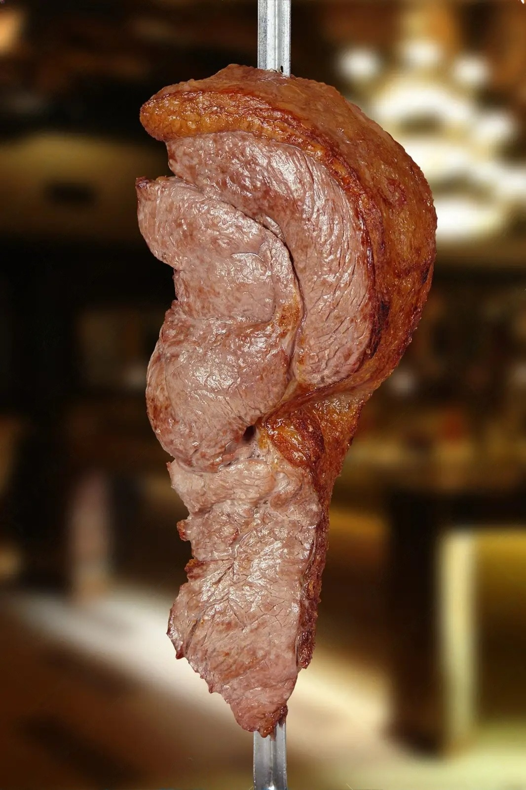
Alcatra
Ideal para quem prefere uma carne mais magra, mas sem abrir mão da maciez. Tem fibras curtas e sabor suave que agrada a todos os paladares.
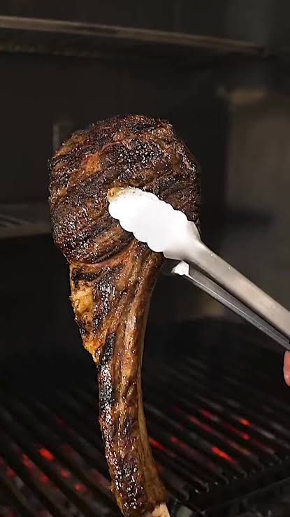
Prime Rib
Uma joia imponente para os olhos e paladar servida com o osso da costela. Une a suculência do miolo do ancho com uma apresentação inigualável.
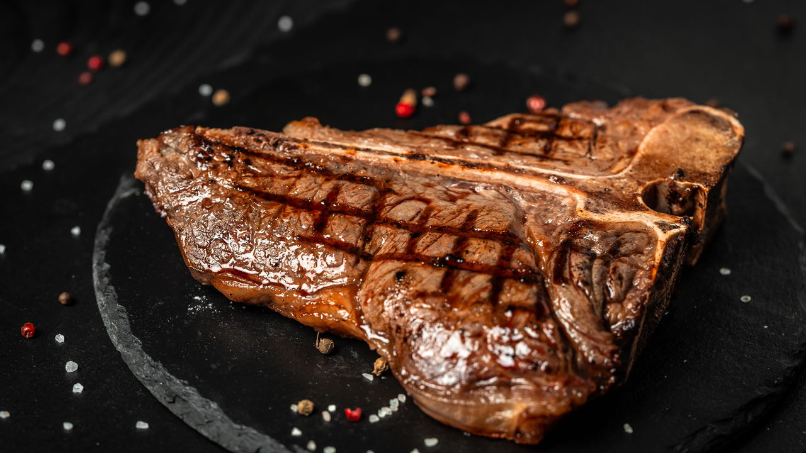
T-Bone
O melhor de dois mundos reunido em um único e suculento corte na grelha. De um lado o sabor do contrafilé e do outro a maciez do filé mignon.
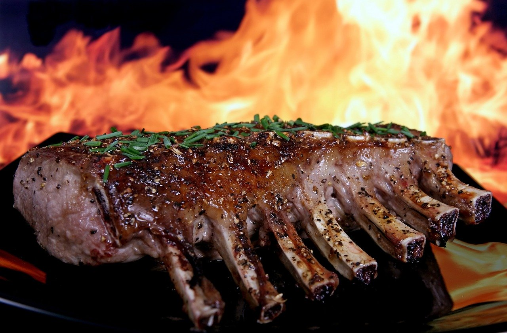
Cordeiro
Uma experiência refinada com carne clara, magra e de maciez sem igual. Traz um sabor sofisticado que combina perfeitamente com nosso molho de hortelã.
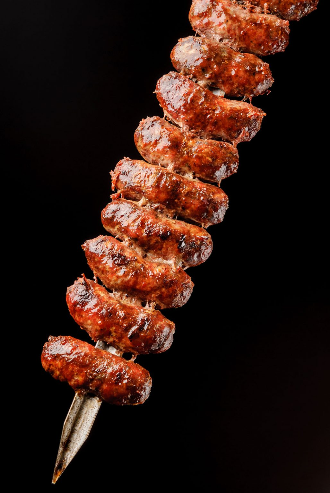
Linguiça Artesanal
O começo perfeito e super crocante para iniciar a refeição com estilo. Traz um recheio incrivelmente suculento com queijo coalho e temperado com pimenta-biquinho para dar um paladar ainda melhor.
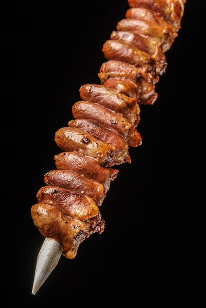
Coração de Galinha
Aquele petisco clássico e quentinho que não pode faltar no seu prato. Traz textura firme com tempero na medida para comer um atrás do outro.
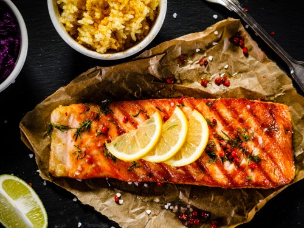
Salmão
A pausa perfeita nas carnes vermelhas com leveza, frescor e muito estilo. Grelhado com a pele crocante, entrega uma carne rosada e úmida.
Saladas & Acompanhamentos
 [cite: 17]
[cite: 17]
Salada Caesar
Alface americana fresca, tiras de frango grelhado, croutons crocantes e queijo ricota/parmesão.
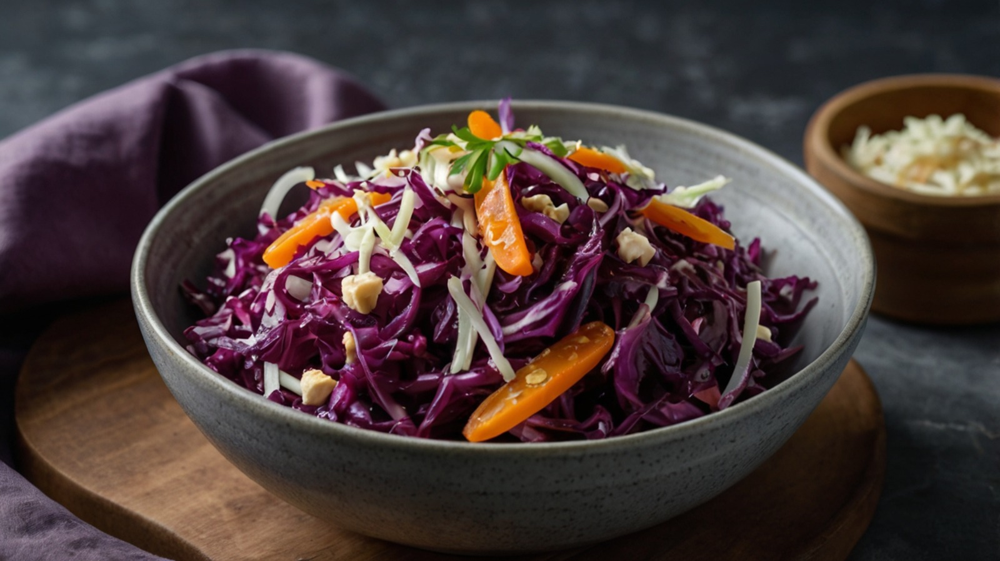
Salada de Repolho Roxo
Repolho roxo fatiado fino, tiras de cenoura e um toque de castanhas crocantes.
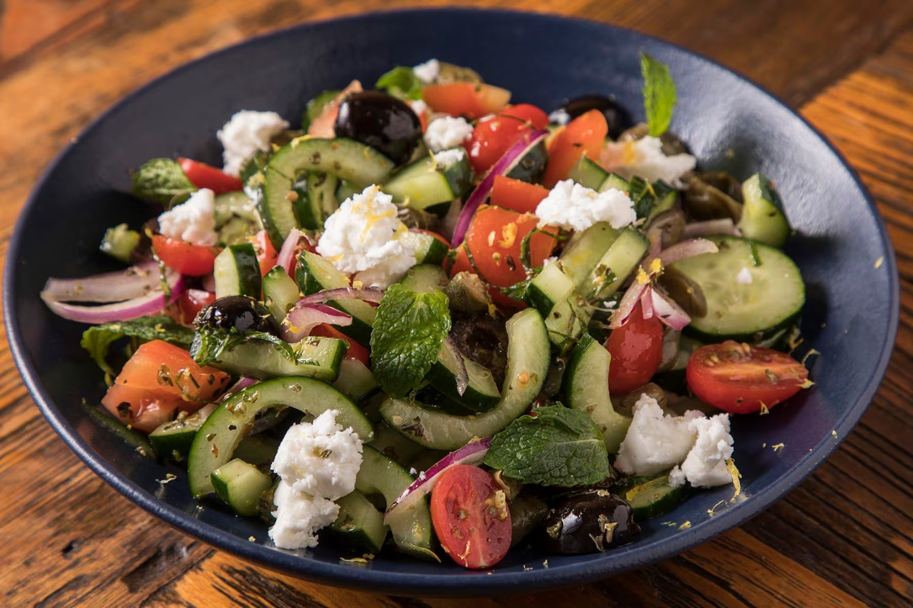
[cite: 19]Salada Grega Refrescante
Tomates cereja, pepino, azeitonas pretas, cebola roxa e pedaços de queijo feto/fresco com ervas.
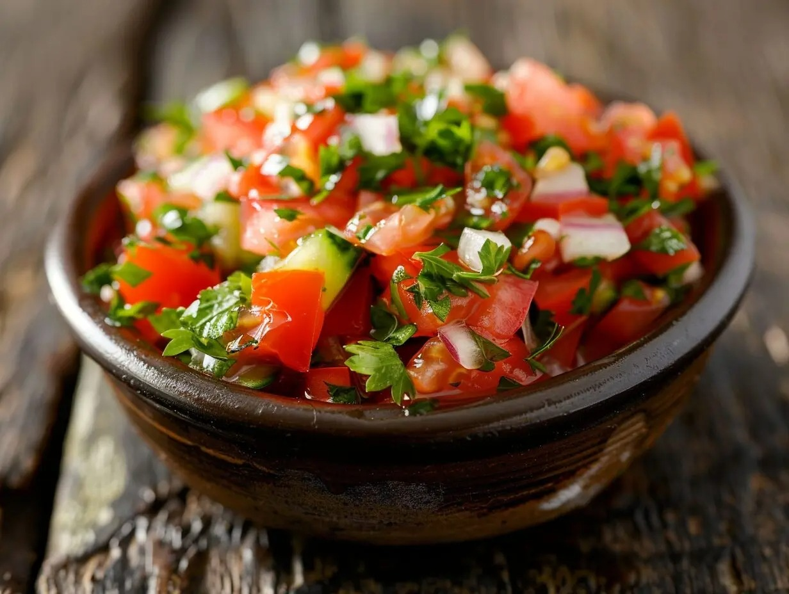
[cite: 20]Vinagrete do Churrasco
Tomates, cebola e cheiro-verde bem picados, temperados com azeite e vinagre especial.
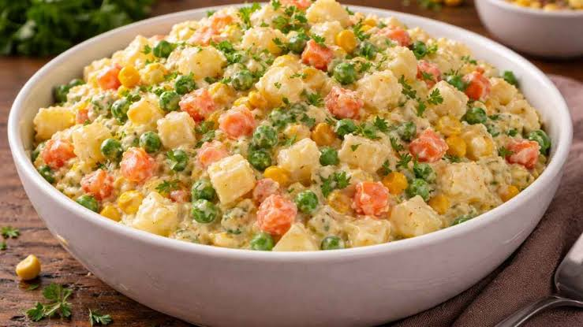
[cite: 21]Maionese de Batatas Caseira
Receita tradicional com batatas em cubos, cenoura, ervilhas, milho e cheiro-verde fresco.
Bebidas
Água Mineral (Com / Sem Gás)
Garrafa 500ml servida gelada com fatia de limão (opcional).
Refrigerantes Variados
Latas de Coca-Cola, Guaraná, Fanta Laranja e Fanta Uva.
 [cite: 16]
[cite: 16]
Sucos Naturais
Com mais de 5 opções de sucos naturais, oferecemos os melhores sabores para você
Chopp & Cervejas Geladas
Canecas de chopp claro ou cervejas artesanais.
Cartas de Vinhos Tinto da Casa
Taça ou garrafa de vinho seco, suave e branco. Ideal para harmonizar com carnes nobres.
Sobremesas
Pudim de Leite Lisinho
Pudim tradicional de leite condensado com calda de caramelo caseira.

Creme de Papaya com Cassis
Um delicioso creme de papaya com licor de cassis.

Abacaxi na Brasa com Canela
Fatia de abacaxi grelhada na brasa com açúcar, canela e mel.

Petit Gâteau de Chocolate
Bolo quente recheado com calda cremosa, acompanhado de bola de sorvete.
Mousse de Maracujá
Mousse leve e cremosa com calda natural de maracujá e sementes.
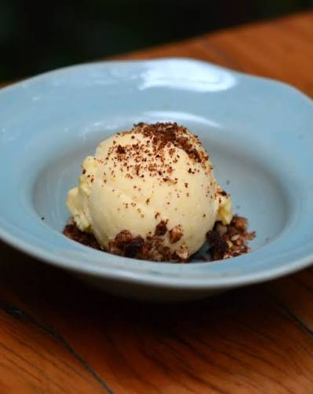
Sorvete Artesanal
Bola de sorvete de baunilha coberta com farofa crocante e frutos secos.